Introduction
This article is a reference to the various shape operations available (through code or the graph editors).
Shapes
These are the shapes used to demonstrate the operations in the rest of the article.
| S1 | S2 |
|---|---|
| 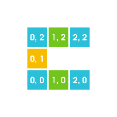 | 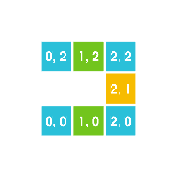 |
Unary Operator
Unary operations work on a single shape. The ones shown below have been applied to S1.
Note
Unary operations in the graph editor are implemented as "projections", that is, the operation is applied to each of the input nodes and returned as a list.
| Translation | Center | Reflect-X |
|---|---|---|
| 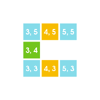 | 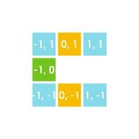 | 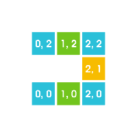 |
| Transforms a shape into a translated copy of the shape. In the example used here, the translation applied is (3, 3). | This translates the shape so that the origin is in the center of the shape's bounding box. (This is only exact if the bounding box has all its dimensions odd integers.) | This reflects the x-coordinates and translates the shape to keep it in the same bounding box. |
| Reflect-Y | Swap Coordinates | Color Filter |
| 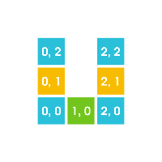 | 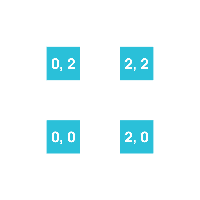 | |
| This reflects the y-coordinates and translates the shape to keep it in the same bounding box. In this example, the shape stays the same, since it is vertically symmetrical. | This swaps the x and y coordinates of the shape, which effectively reflects the shape about the line x = y. | This operation applies a given coloring to each point in the shape, and keeps it if its color is on the "allowed" list. In this example, the coloring used is (2, 0, 2), and only color index 0 is allowed. |
Binary operations take two shapes and return a single shape. In the examples below, the two shapes are S1 and S2.
Note
In the graph editor, binary nodes ignore all but the first two inputs.
| Subtraction | Product | Product |
|---|---|---|
| 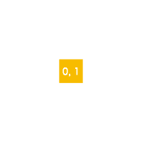 | 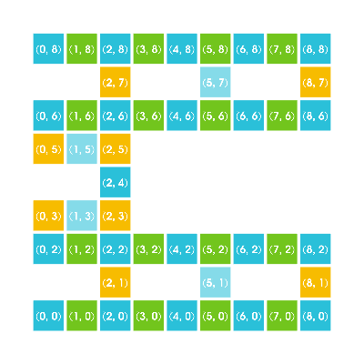 | 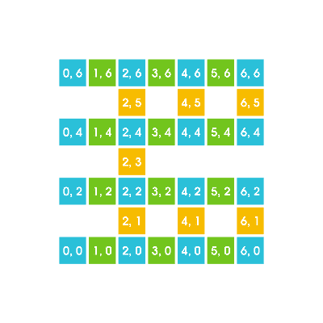 |
| This operation takes all points of the first shape that are not part of the second shape. | This operation makes copies of the second shape in each point of the first shape scaled by a given factor in each dimension. Typically, the dimensions of the second shape are used as the scaling factor, in this example, (3, 3). | In this example, the scaling factor is (2, 2). |
N-ary Operators
N-ary operators take a list of shapes and return a single shape. In the examples below, the list of shapes contains S1 and S2.
| Union | Intersection |
|---|---|
| 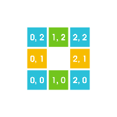 | 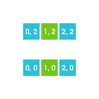 |
| This operation returns the points that are in any of the input shapes. | This operation returns the points that are in each of the input shapes. |
3D Graph Operations
| Simple Layer | Multi Layer | Orthographic Projection |
|---|---|---|
| 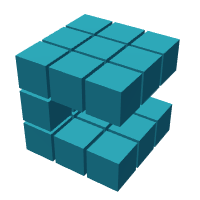 | 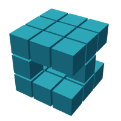 | 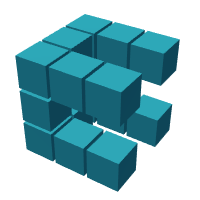 |
| This operation stacks a single 2D shape multiple times along the z-axis. In this example, we stacked S1 three times. | This operation stacks a list of 2D shapes along the z-axis. In this example, we stacked S1, S2, S1. | This operation takes 3 2D shapes, and interprets each as the orthographic projection to calculate the 3D shape. In this example, we used S1 for each of the 3 projections. |